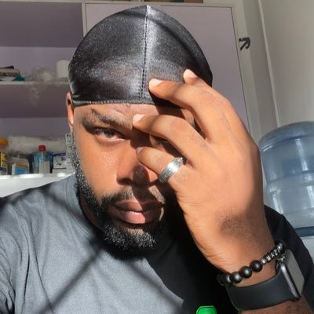

Alexandra the Marketer 
@alex_skazka • 8h
If Twitter got shut down tomorrow, where would you go?
33.1K
Adex
@peladexn • 22h
Dem no fit catch my guy ü§£ü§£
A very short story
Checkout the video thread üëá
A very short story
Checkout the video thread üëá

250.5K
Show this thread
Saskay
@OfficialSaskay • 15h
Double the giggles
Double the grins
Double the celebration!!!
Happy Birthday to us sweet girls
All sweetness courtesy of @fastestCakes
Double the grins
Double the celebration!!!
Happy Birthday to us sweet girls
All sweetness courtesy of @fastestCakes
212.3K

Peter Obi
@PeterObi • May 14
The efforts being made by Hilda Effiong Bassey (Hilda Baci) to beat the current
Guinness World Record for cooking for 4 days nonstop shows the
true Nigerian spirit of hardwork and resilience.
250.5K
Peter Obi
@PeterObi • May 14
I applaud her determination and focus on the goal, which is inspiring many Nigerian youths
to
live their dreams through hardwork and dedication.
I wish her well on this noble journey to pen her name in the golden book of history. -PO
I wish her well on this noble journey to pen her name in the golden book of history. -PO

UG
@UgwunnaEjikem • Feb 7
Amala & ewedu is food fit for prisoners.

Pharaohüë≥üèæ‚Äç‚ôÇÔ∏èüëë
@MrMekzy_ • Feb 7
What is your unpopular opinion about a food that would put you in this situation?

81.7K
Jade Osiberu
@jadeosiberu • 15h
Look, too many faves tonight. Everywhere you turn, excess beauty
ÎîîÎîî Ïù¥ÏïºÍ∏∞ üíú‚Å∑
@didi_stories_ • 15h
Nigerian women's beauty >>>>>>
1,991
ü™Éüå†
@lein_428 • May 16
Biggest downgrade in human history
Warlü¶ùck (VOL.3 ERA)
@cosmocapesh1t •
May 15
Enough with the "Name a bigger upgrade" trend...
Name a Bigger DOWNGRADE...
12.6M
Show this thread